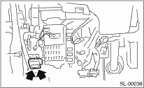
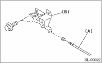
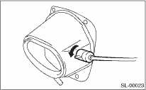

1. Remove the front hood lock assembly. 
2. Remove the release cable from front hood lock.
3. Remove the bolt, and then detach the opener lever.

1. Remove the rear seat.
2. Remove the center pillar lower trim and side sill cover. Remove the rear pillar lower trim. Remove the floor mat.
3. Remove the rear quarter trim RH. Remove the clip holding the cable.
4. Remove the bolt, and then remove the opener pull handle.
5. Remove the cable (A) from opener pull handle (B).

6. Rotate the fuel lock inside the quarter panel to the left and remove.
